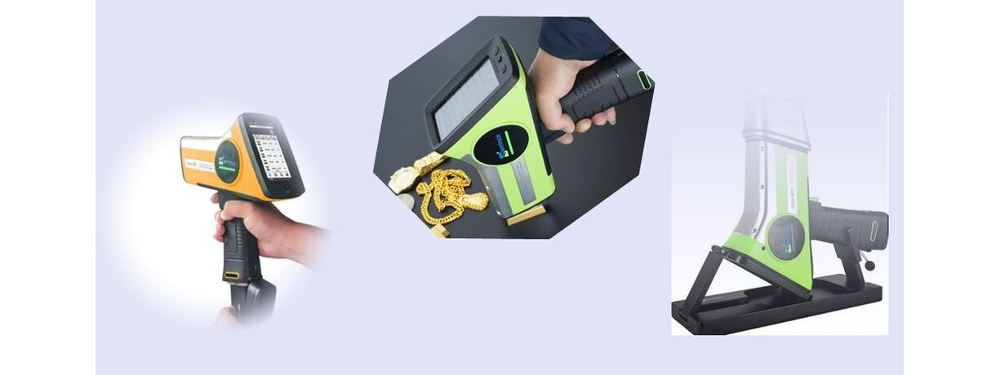
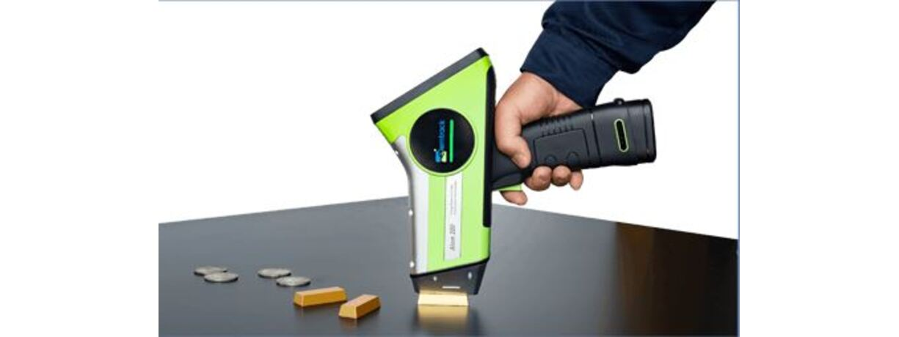
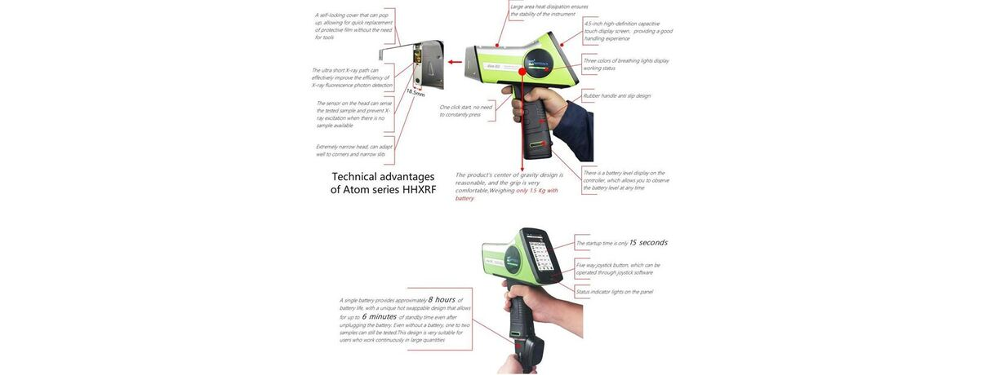
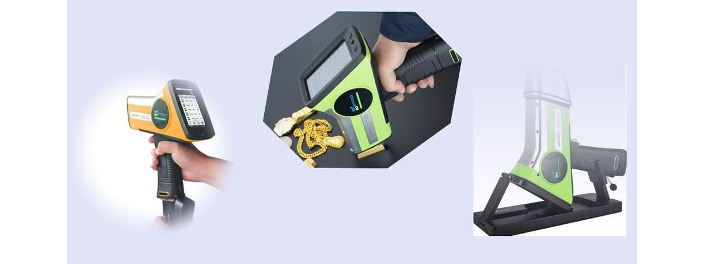
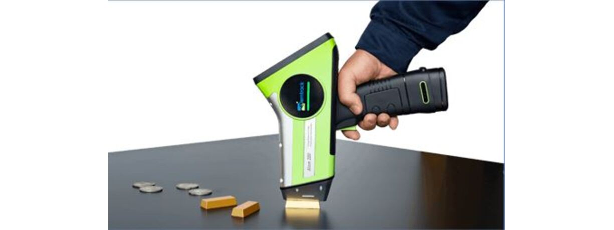
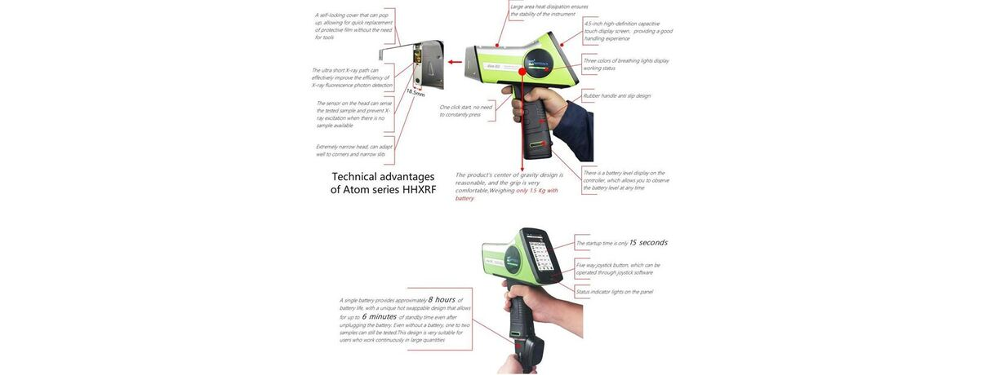

Compact • Powerful • Precision Welding • Ideal for Fine Jewelryy
 





THandheld ATOM 200 is a compact yet powerful micro welding solution, ideal for precision work in fine jewelry and small components. It delivers clean, controlled welds with minimal heat impact, perfect for delicate applications.
| MODEL | Handheld ATOM 200 |
|---|---|
| Net Weight | 1.5kg (including battery) |
| Outside Dimension: | 275mm（d）× 245mm（w）× 82mm（h） |
| X-ray Tube: | Ag target, 50kV/200µA |
| Detector: | High-performance American Amptek Si-pin,125eV |
| Display: | 4.5-inch capacitive touch display |
| Multichannel Analyzer: | Amptek (USA) |
| Net Weight | 1.5kg (including battery) |
| Outside Dimension | 275mm (D) × 245mm (W) × 82mm (H) |
| X-ray Tube | Ag target, 50kV / 200µA |
| Detector | High-performance American Amptek Si-PIN, 125eV |
| Display | 4.5-inch capacitive touch display |
| Multichannel Analyzer | Amptek (USA) |
| Elements Display | Au, Ag, Pt, Pd, Rh, Cu, Ni, Zn, Co, Mn, Ti, Pb, W, Sn, Cr, Cd, In, Fe, As, Ru, Re, Os, Ir |
| Modes | Precious Metal Analysis, Plating Thickness Analysis (optional) |
| Operating System | Linux |
| Optical System | ULS horizontal optical system |
| Languages | Default Chinese, English; customizable multilingual support |
| Accuracy | ± 0.03% |
| USB Ports | Two USB ports for flash drives or PC connectivity |
| Testing Time | 5–60 seconds |
| Collimator | 2.6mm |
| Microcomputer System | Industrial-grade 4-core 1.8GHz CPU, 2GB RAM, 24GB storage (stores ~300,000 spectra), 15s startup |
| Scalability | Connects to PC, Android phone, iPhone, or Bluetooth printer wirelessly |
| Radiation Protection | Password protected; infrared sensor prevents X-ray emission during aerial testing |